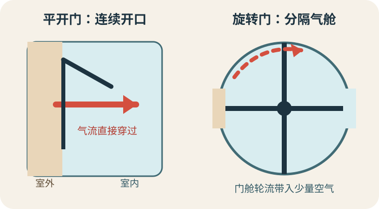
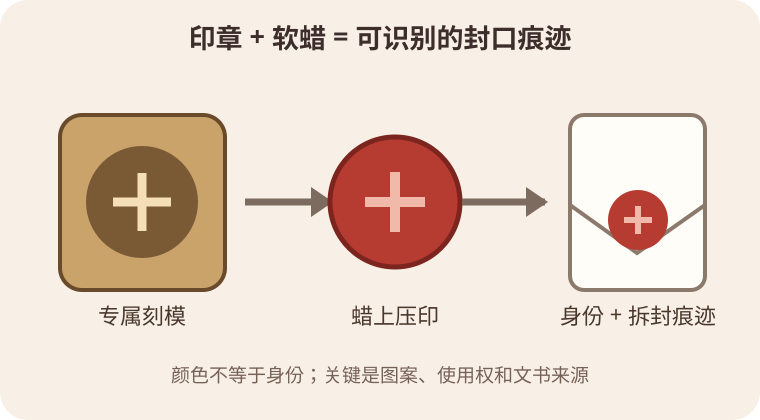
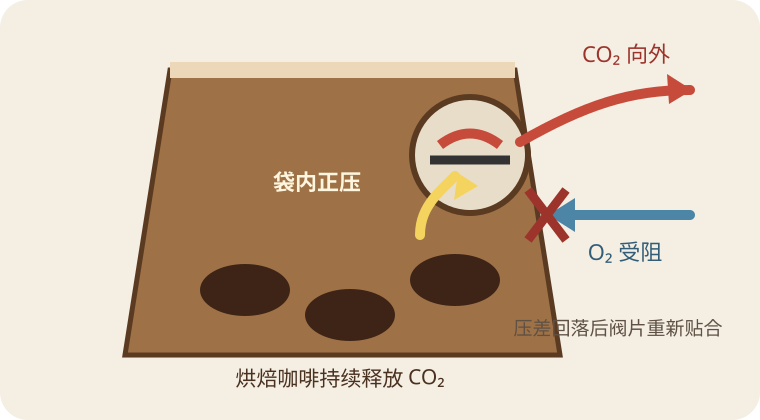

今日热点 01 · 台湾 / 城市韧性
台湾七地把手机网络限速到256 Kbps：演练的不是彻底断网
8月13日，台北等七个北部城市和地区进行30分钟移动通信受限演练，电信运营商把网络降至256 Kbps。文字消息大致可用，视频和多数网页会明显受阻；目的在于让人练习离线保存避难信息，而不是测试全岛断网。
发生了什么
限速持续30分钟，范围是七个北部城市和地区
美联社与台湾全民防卫动员署资料显示，8月13日下午，台北、新北、基隆、桃园、新竹县、新竹市和宜兰进行移动通信受限演练。参与的电信运营商把手机数据速度降到256 Kbps，持续30分钟。
256 Kbps不是零。纯文字消息和很轻的页面仍可能传送，图片、视频通话、地图刷新与大多数现代网页会变得很慢。把它写成“断网”很醒目，却会漏掉演练真正测试的状态：网络还在，但容量已经不够日常使用。
为什么这样设计
通信系统最常见的坏法，是拥塞、降速和局部失灵
地震、台风或军事冲突都可能损坏基站和传输线路，大量用户同时打电话、传视频又会挤占剩余容量。受限网络往往不是整齐地从“正常”跳到“消失”，而是在不同地点、不同服务之间逐步退化。
因此，30分钟限速让警报、避难地图、家庭联络方式和线下集合点暴露出依赖网络的地方。演练前把防空避难地点截图保存，并约定优先发短文字而不是视频，比临时寻找一个所谓“永不断线”的应用更实际。
这与你有什么关系
任何城市的应急准备，都要回答“网慢到几乎不能用”怎么办
手机里至少应离线保存家庭联系人、常去地点附近的避难或应急设施、基础医疗信息。导航软件是否下载了离线地图，支付、门禁和工作登录是否完全依赖短信验证码，也值得在平时检查。
限速演练还提醒人们给信息分级：先报平安、位置和下一步，再传照片；群聊里尽量只发一次明确消息。应急通信追求的是让有限带宽多承载几条有用信息，不是维持平时的全部使用体验。
聊天时可以补一句
一次演练不能证明系统已经可靠，它只能暴露依赖
台湾方面本周在14个地方政府分批演练，从公共交通停驶、物资配送到通信受限。覆盖项目多，不等于每个家庭和机构都完成了自己的备份；参与者是否理解警报、离线资料是否可用，仍需事后评估。
演练造成不便可以批评，技术描述也要准确。是30分钟、七地、移动数据限速，而不是永久、全岛、所有通信中断。把范围说清楚，才能讨论代价是否合适，以及下一次应该改什么。
灾害通信最需要准备的，常常不是完全断网，而是网络还在却慢到只够发几行字。
查看事实与延伸来源
美联社8月13日：七地限速范围、时长与256 Kbps
台湾全民防卫动员署：8月7日至13日演练项目与14个地方政府
台湾移民署新闻网：北部七地与离线保存避难资料
今日热点 02 · 电影 / 商业
拍完却险些消失的《郊狼大战ACME》，终于定在8月28日上映
华纳兄弟曾打算不发行这部约7000万美元制作的真人动画电影，并把损失用于税务处理。Ketchup Entertainment后来买下发行权，影片定于2026年8月28日登陆影院。它获救了，但制作成本、收购价与最终回本是三笔不同的账。
这部片经历了什么
电影已经拍完，原片厂却曾决定不让观众看到
《Coyote vs. Acme》把《乐一通》里的歪心狼带进真人法庭喜剧。美联社报道，影片制作花费约7000万美元，华纳兄弟在2023年决定搁置，并准备对项目作税务减记，而不是安排院线或流媒体发行。
消息引发电影从业者和观众反对。片方随后允许寻找买家，Ketchup Entertainment最终取得发行权。影片官网与发行方都已列出8月28日档期；这比一次内部试映或“正在洽谈”更接近真正上映，但排片规模仍要由影院市场决定。
为什么拍完也会被封存
已经花掉的钱，不会自动让后续发行变得划算
制作费只是电影走到观众面前的一部分成本。美联社引述业内估算，这类全国发行还可能需要3000万至4000万美元营销费。原片厂会比较继续投入后的预期收入、授权机会和税务处理，而不是只问“电影好不好看”。
这套判断在财务上可以解释，在创作关系上仍有代价。演员、动画师和导演完成了工作，却可能失去作品、署名影响和后续机会。合同允许某种处理，不等于观众和从业者会认为它合理。
几组数字别混用
7000万美元是制作费，约5000万美元是报道中的交易规模
美联社把Ketchup取得影片的价格写为约5000万美元。这个数字不是影片总成本，也不表示原片厂已经收回全部投入。营销、院线分账、国际发行和后续授权会继续改变各方的实际收益。
同样，税务减记不是政府按制作费开一张等额支票。它通常减少可计税收入，实际税收影响取决于会计处理和适用税率。用“拿7000万美元退税”概括，会把会计损失写成现金收入。
聊天时可以补一句
这次上映救回一部片，却没有消除“完成品也会消失”的风险
电影被另一家公司接手，说明完成品仍可能有市场价值。它也说明发行权、底片所有权和创作者决定权并不在同一个人手里；作品完成之后，所有者仍能决定它何时、以什么方式出现。
真正值得看的不只是首周票房。若收购方能靠中等规模发行收回成本，行业会多一个反例：封存不是已经完成电影的唯一理性选择。若市场表现不佳，原片厂当年的决定也不会因此自动变得公正。
电影拍完只说明制作成本已经发生；是否发行，还要另算营销、分账、授权和机会成本。
查看事实与延伸来源
美联社8月13日：制作费、搁置经过、交易规模与发行成本
影片官方网站：2026年8月28日上映
Ketchup Entertainment：发行安排与影片消息
今日热点 03 · 巴西 / 环境治理
巴西法院认可亚马孙大豆协议，也允许州政府不给参与者税收优惠
巴西最高法院8月12日确认，企业自愿承诺不采购2008年7月后亚马孙新毁林地的大豆，协议本身合宪；同时，马托格罗索州和朗多尼亚州可以不给参与企业税收优惠。两个结论并不相互取消，却会改变企业是否继续加入的现实收益。
先分清两层规则
协议约束签约企业，州法决定公共优惠给谁
“大豆禁伐协议”始于2006年。主要贸易商自愿承诺，不购买亚马孙生物群落中2008年7月以后新毁林地生产的大豆。它比巴西森林法更严，因为后者在符合条件时仍允许土地所有者合法清理一部分私有土地。
马托格罗索和朗多尼亚后来规定，采用这类额外环境限制的企业不能享受某些税收优惠或公共土地。最高法院这次一面承认企业可以作出自愿承诺，一面认可州政府有权为财政优惠设条件。
为什么结果影响很大
法律没有禁止协议，经济激励却可能让成员退出
主要粮商已在今年1月退出协议。企业若继续遵守，仍可凭采购标准回应国际客户和供应链要求，却可能失去州级税收利益。法院保留了选择权，没有保证每一种选择的成本相同。
这也是自愿标准常见的脆弱处：它靠买家承诺、监测和商业回报运转，没有法规那样统一强制。公共政策若奖励或惩罚某种选择，会重新计算参与者的成本，哪怕协议文本一字未改。
与你的消费有什么关系
中国是巴西大豆最大出口目的地，供应链标准会跨过国境
美联社援引巴西官方贸易数据称，中国是其大豆最大出口目的地。大豆会进入食用油和动物饲料，之后再进入肉、蛋、奶等更长的链条。消费者通常看不到一粒大豆来自哪块土地。
采购商若承诺“零毁林”，需要地块定位、供应商审查和可追溯记录；只看巴西法律允许与否，回答的是合规底线，不是买家自己的环境标准。两套问题应该分别问，不能用一个绿色标签代替。
聊天时可以补一句
法院判的是规则边界，不是替所有人决定哪种农业政策最好
支持者认为协议减少高风险地区毁林，反对者认为私人买家不应封死法律允许的开发。最高法院确认双方仍可在各自权限内行动：企业可订更严标准，州政府也可决定优惠条件。
下一步要观察的是贸易商会不会以新形式恢复共同承诺，以及国际买家是否单独提高采购要求。判决结束了一部分法律争议，却没有自动恢复已经退出的成员，更没有让亚马孙的土地选择变简单。
“允许企业自愿更严格”与“政府必须补贴这种选择”是两道不同的法律问题。
查看事实与延伸来源
美联社8月12日：最高法院裁决、企业退出与贸易背景
巴西最高法院：8月12日案件议程与两项州法争点
巴西最高法院：马托格罗索州限制优惠的法律背景
巴西反垄断机构CADE：协议的竞争审查与2026年安排
涉猎 01 · 建筑 / 气流
旋转门为什么总在大楼入口转：它没有把室内外直接敞开
普通平开门开启时会形成一条连续通道，风压、温差和通风系统都能推动空气交换。旋转门用门翼把圆筒分成几个小舱，人在通过时入口仍被分隔；它通常减少渗风，但不会让空气交换归零。

旋转门把一次敞开的通道拆成轮流转动的小气舱；密封缝和门舱转动仍会带入带出空气。原创示意，非按比例。
气流从哪里来
风、烟囱效应和机械通风都会在门两侧制造压差
高楼冬季的暖空气上升，会让低层入口附近出现压差；风吹建筑外墙、排风和送风系统也会推拉空气。普通门一打开，室内外之间短时间出现连续开口，冷暖空气和湿气便能交换。
旋转门的门翼始终在圆筒里分隔空间。人进入一个小舱，转到另一侧再离开，气流没有一条贯穿入口的直线通道。研究因此常把它用于高人流建筑的渗风与冷热负荷分析。
它也不是气闸
门舱会搬运空气，边缘密封也会漏
每个门舱从室外转到室内时会带进一部分空气，反方向也一样。门翼与圆筒、地面之间还要留出可运动的缝隙。旋转速度、人流、压差和密封状态都会改变实际交换量。
所以“旋转门一定节能”仍要看场景。阿拉斯加大学项目发现，一些建筑虽能技术上降低渗风，节省的能源费却未必抵得上改造成本。设计还要保留无障碍和大件通行的旁门，并避免把它长期敞开。
旋转门减少的是入口形成连续大开口的时间，不是把室内外空气完全隔绝。
查看事实与延伸来源
美国土木工程师学会期刊：公共建筑旋转门漏风实测
康考迪亚大学：旋转门渗风实验与压差机制
阿拉斯加大学：不同入口的节能与成本边界
涉猎 02 · 文书史 / 身份
火漆印为什么曾能证明“这封信是我的”：关键是印章，不是红蜡
蜡把信件或文书暂时封住，刻有个人、机构或官职图案的印章在软蜡上留下反向压印。收件人凭图案和使用情境识别发件者，也能看出封口是否破坏；颜色本身通常不是可靠的身份密码。

印章提供可识别图案，蜡承载压印并跨过封口；二者合在一起，才形成身份线索和拆封痕迹。原创示意。
一枚印怎样工作
刻模是阴的，蜡上的图案是压出来的阳印
印章可以做成戒指、吊坠或独立印模，上面刻姓名、徽记、职位或机构标志。压进软蜡后，凹凸方向翻转，形成可供识别的图案。英国国家档案馆指出，印的意义在于提供身份和权威凭据。
用于文书时，蜡可直接附在纸面，也可通过带子悬挂；用于信件封口时，蜡跨过折缝。后者被打开通常会断裂或留下变形，让收件人知道封口受过干扰。不过，拿到原印章的人仍可能冒用，火漆不是现代密码学签名。
为什么后来少见了
纸张、邮政与签名制度让便宜、快速的验证方式占了上风
制作和保存火漆印需要材料、时间与避免挤压的运输条件。公文登记、手写签名、信封胶口和邮政戳记逐渐承担了不同功能，现代机构又使用证件、数据库和数字签名。
今天请柬上的火漆多半是风格选择，但历史文书上的印仍是档案证据。研究者会看图案、题铭、材料、悬挂方式和文书来源，不能只凭“红色看起来正式”就判断真伪或身份。
火漆只是承载和封口的材料；真正可识别的身份线索，来自谁有权使用哪一枚印章。
查看事实与延伸来源
英国国家档案馆：印章的身份、权威与研究方法
剑桥大学国王学院：印章、戳记与制度权威
沃尔特斯艺术博物馆：个人印章实物与反向刻模
涉猎 03 · 咖啡 / 包装
咖啡袋上的小圆孔不是闻香孔：它是一枚压差控制的单向阀
咖啡豆烘焙后仍会释放二氧化碳。密封袋里的压力升高到阀门开启条件时，气体向外排；压力回落后阀片重新贴合，尽量限制氧气和湿气进入。用手挤袋子闻香，反而是在主动放走袋内气体。

袋内压差足够时，阀片短暂打开排气；回落后再贴合。真实阀门结构和开启压力因产品而异。原创示意。
气从哪里来
烘焙形成的二氧化碳，会在此后数天到更久逐步逸出
高温烘焙引发一系列分解和褐变反应，气体留在咖啡豆内部孔隙。冷却后，二氧化碳仍会慢慢扩散出来。若新鲜烘焙的咖啡立刻装进完全密封又没有排气方式的软袋，包装会鼓起，严重时可能损坏封口。
把袋子长期敞开又会让氧气和湿气进入，加快香气损失与陈化。单向阀解决的是包装两难：允许内部气体在压差足够时离开，同时把外部空气进入控制得尽可能少。
为什么能单向
阀片、油膜或弹性结构在压力回落后重新密封
不同专利结构不完全一样，但共同思路是让袋内正压推开一条向外通路；排出部分气体后，阀片借弹性或黏附重新闭合。它不是一直敞开的针孔，也不会主动把氧气“吸走”。
加州大学戴维斯分校馆藏资料显示，意大利烘焙商在20世纪70年代已使用这类阀门，后来它帮助咖啡更远距离销售。阀门只能延缓包装中的气体交换；开封次数、研磨程度、温度和袋材阻隔性仍会影响保存。
咖啡阀靠袋内外压差排出二氧化碳，并尽量挡住氧气；它不是给顾客挤着闻香的按钮。
查看事实与延伸来源
加州大学戴维斯分校图书馆：咖啡单向阀的历史与保存作用
欧洲专利局：咖啡包装脱气阀结构与选择性排气
美国专利资料：咖啡烘焙后产气与选择性脱气阀
“真相很少纯粹，也从不简单。”
奥斯卡·王尔德《认真的重要性》（1895） · 本刊译
这句台词不是严肃的认识论宣言。杰克刚把自己的双重身份说成“全部真相，纯粹而简单”，阿尔杰农立刻用俏皮话拆穿他。王尔德讥讽的是人总爱把有利于自己的叙述包装成整齐答案。真相会受身份、动机和讲述角度牵扯；承认这些纠缠，不等于放弃辨别事实，反而是不让“简单”冒充“完整”。笑话很轻，落点并不轻。
核对原文与语境
“明智的人，会让自己的相信与证据相称。”
大卫·休谟《人类理解研究》（1748） · 本刊译
休谟在讨论奇迹和证言时写下这句话，后面紧接着比较一致经验、相反案例与不同程度的把握。它没有要求人在证据不全时闭嘴，而是让信心也有刻度：一百个一致观察和一百对五十，不该得到同样笃定的结论。新证据改变权重时，调整判断不是反复无常，而是把相信的强度重新对准材料，也给怀疑留下合适的位置。
核对原文与语境
“知识有两种：我们自己知道一个主题，或者知道去哪里找到关于它的资料。”
塞缪尔·约翰逊《鲍斯韦尔撰《约翰逊传》》（1775年谈话，1791年出版） · 本刊译
约翰逊在朋友家的书房里急着查看书脊，主人问他为何对书目如此着迷，他便解释了这两种知识。接下来的原话还说，研究一个问题先要知道有哪些书谈过它，因此得看目录和书架。这里的“知道去哪找”不是偷懒，而是一种检索能力：分清自己记得的、需要核对的，以及哪种资料足以回答哪类问题。
核对原文与语境
“新的科学真理，并不靠说服反对者、让他们看见光明而获胜；更多时候，是反对者逐渐离场，熟悉新真理的一代成长起来。”
马克斯·普朗克《科学自传及其他论文》（1949年英译本） · 本刊译
普朗克回顾量子论被接受的过程时写下这段略带苦涩的话。它后来常被缩成“科学一次葬礼一次葬礼地进步”，但原文谈的是共同体接受新观念的迟缓，不是说证据和论证毫无用处。制度、教科书与年轻研究者的训练会影响理论更替；代际变化能松动习惯，却不能替一项主张完成实验、反驳和复核。
核对原文与语境
“尽了自己的志力却仍未到达，便可以无悔了；又有谁能讥笑呢？”
王安石《游褒禅山记》（1054）
王安石写游山半途而返，同行者催促退出后，众人才发现还能继续深入。他没有把“尽力”当作随口的安慰，而是先区分三件事：有志、付力，还要借助必要条件。若能力尚有余地却退了，才会留下后悔。这句话的分量在那个前提里：无悔不是结果不重要，而是行动前已判断方向，过程中也确实把能用的力和条件用到了尽头。
核对原文与语境